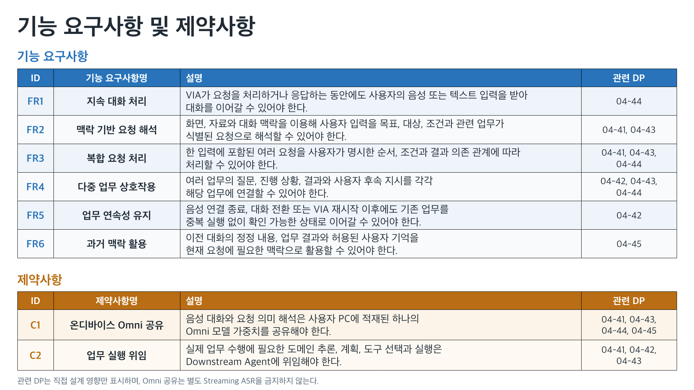

<!doctype html><html lang="ko"><meta charset="utf-8"><title>VIA 기능 요구사항 및 제약사항</title><style>body{margin:24px;background:#eaf0f3;font-family:system-ui;color:#202b35}main{max-width:1600px;margin:auto}img{display:block;width:100%;margin-top:20px;box-shadow:0 2px 12px #0002}a{color:#2873b9}</style><main><h1>VIA 기능 요구사항 및 제약사항</h1><p><a href="VIA-functional-requirements-and-constraints.pptx">편집 가능한 PowerPoint, 한 장</a> / <a href="../functional-requirements-and-constraints.md">Markdown 원문</a> / <a href="functional-requirements-and-constraints.png">PNG 원본</a></p></main></html>